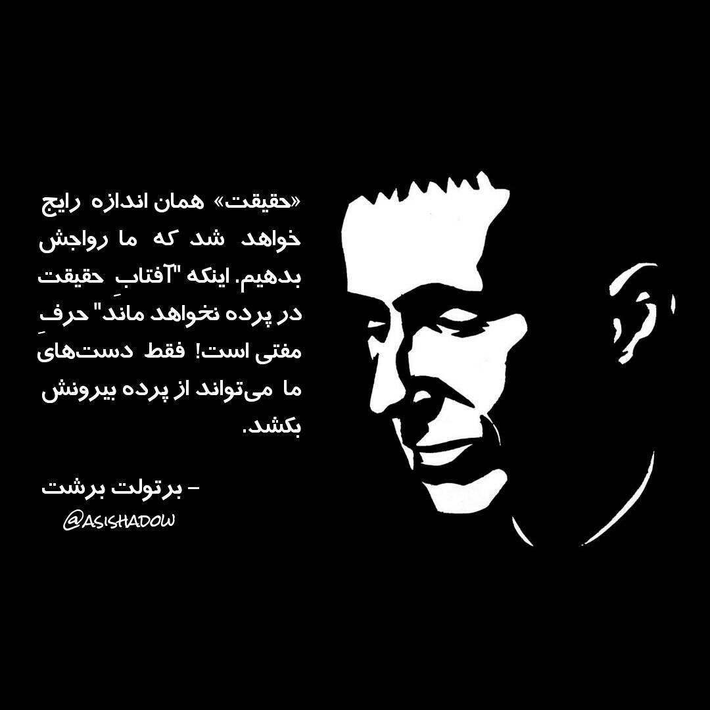

Bertolt Brecht, original name Eugen Berthold Friedrich Brecht, (born February 10, 1898, Augsburg, Germany - died August 14, 1956, East Berlin), German poet, playwright, and theatrical reformer whose epic theatre departed from the conventions of theatrical illusion and developed the drama as a social and ideological forum for leftist causes.

A brief history of Brecht's life:
- 1898 - Born in Augsburg, Bavaria where his father runs a paper mill.
- 1914 - His first poems are published.
- 1920 - He is named chief adviser on play selection at the Munich Kammerspiele.
- 1922 - He marries the opera singer and actress Marianne Zoff.
- 1926 - Man Equals Man premieres at Darmstadt and Düsseldorf.
- 1927 - Brecht divorces Marianne Zoff.
- 1929 - Brecht marries Helene Weigel.
- 1935 - Brecht is stripped of his German citizenship.
- 1944 - Brecht becomes a member of the Council for a Democratic Germany.
- 1955 - Brecht receives the Stalin Peace Prize.
- 1956 - Bertolt Brecht dies of a heart attack at the age of 58.
"Fear the inadequte life"